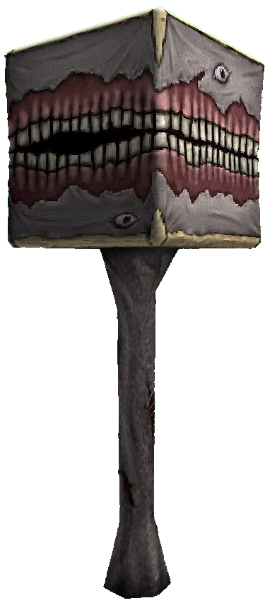

The Flesh Panopticon is a massive right rhombohedron (cube) with a large mouth stretching across its sides. It rotates slowly atop a fleshy stalk, resembling a demonic tree. The stalk leads into the cube's base, composed of pallid gray skin reinforced with human bone, giving it a sturdier, more imposing appearance compared to the original Flesh Prison. The Panopticon's face, splayed across the skeletal structure, moves with a counter-rotating ripple as its teeth chatter ominously.
Fires 16 tracking mortar projectiles (25 in Phase 2) that follow the player's movement, similar to the Hideous Mass. These mortars lead the player, making them dangerous to avoid. Note: Mortars become slower on lower difficulties.
The Panopticon summons two (three in Phase 2) massive beams of divine light, with the first being horizontal. The beams increase in duration with each subsequent attack, requiring precise movement to avoid.
Summons a Black Hole that follows the player throughout the battle, reducing their health to 1 if caught. This attack does not appear on Harmless difficulty.
The Flesh Panopticon summons a variety of minions, with their number and type changing based on difficulty. As long as at least one minion is alive, the player suffers hard damage, preventing any healing. Killing these minions is crucial for survival, as leaving them alive allows the Panopticon to heal. However, this also triggers Sisyphus Prime to spawn during Phase 2. Minions restore HP to the Panopticon when alive.
Use powerful weapons like the Shotgun or Knuckleblaster to quickly eliminate the minions and prevent healing.
Keep your distance from the Flesh Panopticon, utilizing vertical and horizontal movement to dodge its mortars and beams. Use the Whiplash to maintain high mobility around the arena.
The Panopticon's eyes can be used for mobility. You can use them as points to Whiplash off of and move swiftly across the arena.
Upon defeating the Flesh Panopticon, Sisyphus Prime will break free, instantly ending the fight. Sisyphus Prime will then attack with agility and power, providing a challenging new foe to test your skills.